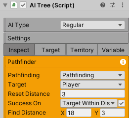
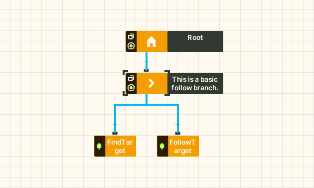
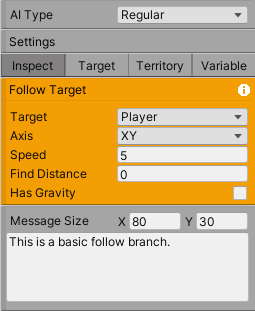
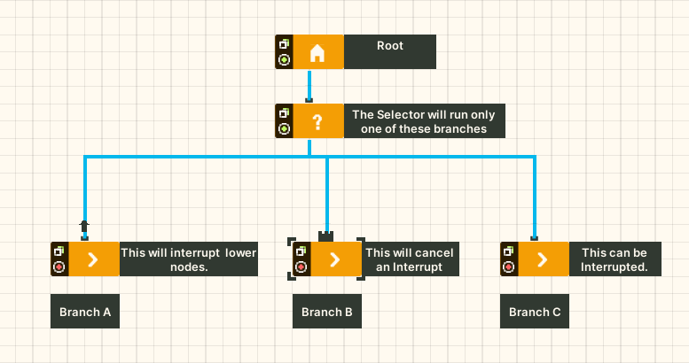
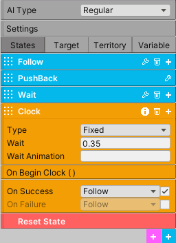

AI
Create truly complex AI using Behavior Trees or Finite State Machines, all without using a single line of code. The AI system is universal so that behavior can be applied to all aspects of the game. Besides creating enemy AI, you can program doors, moving platforms, design a save system, or create any utility that requires complex logic.
The two classes that implement AI is AITree and AIFSM. Before creating an AI, you should have an idea on how complex the behavior is. Typically, use a FSM for simple AI as this will generally be faster to create. Behavior Trees should be used for AI that would otherwise have too many states to handle in a FSM.
Both AI systems utilize nodes to create behavior. The system itself comes with over forty nodes, allowing for a lot of functionality for creating practical AI out of the box. However, there may come a time when none of the nodes in the system provide the desired behavior, in which case, you can always create a node to fulfill this need. Below is an example of how these classes look in the inspector.
Behavior Tree
Behavior Trees offer an alternative to finite state machines. They move away from the concept of state, and instead rely on hierarchical nodes to execute actions. This gives the developer flexibility for adding behavior into the tree and the ability to create truly complex designs without having to worry about state jumping logic.
How it works: the tree will always execute from left to right and from top to bottom. That is, nodes that are the most left and highest on the tree will have priority over lower nodes. Once a higher priority node is no longer active, the tree will evaluate the next highest node, and so on.
It is important to note the system will not reevaluate the entire tree each frame. This is a good thing, since we want the tree to be efficient and to only execute the current active node. To allow the tree to check for inactive priority nodes, the system implements interrupt checks. Interrupt checks must be enabled and are found in each Composite node.
Nodes
Each node can have one or more of three states:
Success: the node is done running and succeeded.
Failure: the node is done running and failed.
Running: the node is still running.
And there are four node types:
Conditional Node
Returns Success or Failure. Its main purpose is to test a condition in the game world, like checking if the player is nearby, so the tree can execute an Action node in response.
Action Node
Modifies the AI by changing its state in the game world. For example, apply a velocity to the AI so that it moves towards the player. These nodes typically return Running.
Composite Node
This node runs a list of child nodes. Composite nodes come in different types, and the type will determine how these child nodes are executed. For example, a Sequence will run its child nodes in sequence until it finds one that returns Failure. A Parallel will run all its children at the same time.
Each composite node also has the option to enable a default animation signal.
Decorator Node
This node can only have one child node, and it will modify the output or behavior of this child node. For example, sometimes it may be necessary to execute a child node after a time delay or perhaps to invert the output of the child node.
Let’s look at a very basic example for a patrolling AI. A Sequence has two child nodes. The first node, a Condition, will check if the player is within distance. The second node, an Action, will move the AI towards the player. Only if the Condition returns Success will the Sequence execute the second node. If the Condition returns Failure, the AI will not chase the player.
Blackboard data
The Behavior Tree also implements blackboard data, which is data that can be shared between nodes. Blackboard data is separated into three categories, and each category exists within its own tab.
Target are objects or points the AI will use for detection or following purposes. Target player is the most common, but of course targets can be transforms or vector points or even the mouse.
Territory is a rectangular area in the game world used for detection. For example, the Find Target node will alert the AI if the player has entered the specified territory. Territories can be dragged and resized in the scene. The other two territories are for pathfinding.
Variable is data that needs to be shared and modified by the nodes. Sometimes it is necessary for two nodes to modify the same list, in which case you might create a TransformListVariable. Of course, the system implements all the common data types for variables.
It’s important to highlight two special variables. If using a Behavior Tree, each AI will automatically contain a Bool Variable called Reset. You cannot delete this. This boolean will be set true when the WorldManager triggers a game reset. Somewhere in the tree, usually at the highest priority, the Variable Logic node will be reading the reset boolean, and when the boolean goes true, it will reset the AI (maybe resetting its position or health). This boolean should then be set false using the Set Value node. Of course this is optional. If the AI doesn’t need to be reset, the reset bool can be completely ignored. You can also trigger this event manually by calling the ResetAI method on the AI class.
The Tree Variable is extremely important for communication. If two different AI systems need to communicate with each other, then simply drop the reference of an AI class into this variable. All the blackboard data of an AI will become available to the AI implementing the Tree Variable. This means the two AI systems can read and modify the same variables.
Each blackboard data you create must be given a unique name. This data, once created, will become readily available to any node that requires it. For example, the Follow Target node has a public member called target that is a Blackboard type. When a field is of this type, in the inspector, simply click on it and choose an option from the available drop-down menu. That’s it.
If you are creating a node from scratch and need a blackboard data, simply add a Blackboard type as a public member and name it.
Tip
If any blackboard data is renamed, make sure to click on any node using it to refresh the references.
Node Editor Window
{kind=link}
If using AITree, a node editor will be required to create the nodes and to configure the node hierarchy. In Unity, go to Window/BehaviorTreeEditor to open the node editor window. The window can be zoomed and dragged. Next, select a gameobject and add the AITree component. You will then see a single node appear in the editor. This is Root, which is the entry point into the Behavior Tree and all nodes and branches belong to it.
Right click anywhere in the node editor and the node context menu will appear. Select a node to create and it will too appear in the node editor. Go to the Inspector of the AITree. If you select the newly created node, the Inspect tab will display this node. This is where you will be changing the public fields of the node. Thus, you will be working with both the node editor window and the inspector to create a Behavior Tree.
Once you have created the necessary nodes, connect them. Each node that can establish a connection (Root, Composites, Decorators) will have a circle on the left side of the node. Click this circle then go to the node you wish to connect and click on top of the node (where the black mark is). If the connection worked, a blue line connecting the two nodes will appear.
As a reminder, the Behavior Tree is executed from left to right and from top to bottom. If a node has two children, the child node that is on the left will have priority. If you click and drag the other child node, changing its position to the left of the first node, the system will automatically establish this node as having a higher priority.
If you right click on any node, another context menu will appear. You can delete the node itself or the entire branch belonging to the node. You can duplicate the node. You can also add as many notes as necessary to the node. The note, if clicked, will appear in the inspector where you can type the necessary information. These notes can be moved and resized for convenience.
You can also create branch templates. For example, maybe you have a simple patrol branch that you wish to recreate in other Behavior Trees, well you can save this as a template to recreate later whenever you wish. These templates will be available in the node context menu. For now, the only way to name these templates is by creating a note. Whatever is typed in that note will become the name of the template. You can then simply delete the note if it’s not necessary anymore.
When the game enters play mode, the active nodes and connections will turn green for debugging.
Tip
In the upper left corner, change the color of editor background.
Interrupts
A Behavior Tree will typically have lower and higher priority branches. Once a lower priority branch is executing, by default the system will no longer check if a higher priority branch needs to be executed. This is to prevent the system from executing the tree from the very beginning each frame. To get around this issue, Interrupts are implemented to allow higher priority branches to interrupt lower priority branches.
For example, if an AI is chasing the player but the player kills the AI in the process, and the node in charge of checking the health of the AI is no longer being checked, the AI will not know it is dead! To avoid this scenario, the higher priority branch should have an interrupt enabled so that the system is always checking the health of the AI.
It’s also important to note that any branch can interrupt itself as well. For example, in the following scenario an AI is tasked with chasing the player but only if the player is inside the AI’s territory. If the player is inside the territory, the AI will begin to chase the player blindly. The branch is no longer checking if the initial condition is true, so if the player steps outside the territory, the AI will not know and continue chasing! To avoid this scenario, the branch should enable a self interrupt to always check if the player is inside the territory.
An interrupt will only check the first child node of a Composite. If the child node is Conditional, the system will check for Success. If the child node is a Composite, it will go into the Composite and check if its first child is a Conditional, and so on. All other types of nodes are ignored.
Interrupts |
|
|---|---|
None |
The node will not check for any interrupts. |
This Node |
The node will be able to interrupt its own branch. A downward arrow will appear above the node. |
Lower Priority Nodes |
The node will interrupt lower priority nodes. An upward arrow will appear above the node. |
This And Lower Priority Nodes |
The node will interrupt itself and lower priority nodes. |
Terminate Immediately |
If enabled and a lower priority node is interrupted, the node will terminate its job and allow the interrupt to continue. |
Cancel Interrupt And Complete |
If enabled and a lower priority node is interrupted, it will cancel the interrupt and continue executing. A black block will appear above the node. |
Below is a contrived example. The nodes don’t actually do anything, but it shows how interrupts work in theory.
Inspector
Property |
|
|---|---|
AI Type |
Regular: the AI is affected by gravity and will be able to interact with the game world via raycasts. A BoxCollider2D will be required. No Collision Checks: this is the complete opposite of Regular. This is meant for AI that doesn’t require complex interaction with the world. Moving Platform: if the AI is a moving platform, make sure it has this setting for proper function because moving platforms are executed before all other objects in the game world. Moving Platforms should not be rotated on their axis. In the latest version, enable has gravity on them to get them to behave like Regular AI. |
Collision And Gravity |
Refer to player for these settings. |
Damage |
If enabled and if the AI has a Collider2D, it will deal damage to any object with a Health component that exists on the specified layer. |
Create Units |
If an AI is part of a group of units that operate under the same AI logic, use this to create the number of units (gameobjects) necessary. Every time you make a change to the FSM or BehaviorTree, recreate the units to ensure they all have the same code by pressing this button. The system will do its best to keep superficial transform settings unique. |
Reset To First |
For a FSM, if this is enabled the system will move to the first state on a global reset. This only occurs if the Reset State is empty. Otherwise the system moves to the first state automatically after the Reset State completes. |
Turn Off Signals |
If the AI doesn’t require any animation signals, enable this to stop the basic animation signals from being set. |
FSM
A finite state machine provides an intuitive approach to creating AI. States make it easy to reason about logic as long as the number of states remains small. Thus, using a FSM should be your first option when designing most basic AI.
All the nodes available to a Behavior Tree are also available to a FSM, except for Composite and Decorator nodes as those concepts are irrelevant here.
There are three types of states. First, you have the Normal States (depicted in blue). The first of these states will be the entry point into the state machine. When the state machine is running, only one of these states will be active at a time. Create these states by clicking the blue button at the bottom of the inspector.
Next you have the Always States (depicted in purple). These states will always run because sometimes it’s necessary to have this type of functionality. These states are technically not part of the state machine, and thus it is not possible to jump states from an Always State. These states should contain content that are applicable to each state. You create these by clicking the purple button at the bottom of the inspector.
And last is the Reset State (depicted in red). This state is called when the WorldManager performs a game reset. The Reset State, if used, occurs in one frame and does not check for collision. Use this state to reset the AI’s position, health, and other important variables.
The state bar has some important options. The first field lets you choose how to run the nodes. If Parallel is enabled, all the nodes will run at the same time. If Sequence is enabled, the nodes will run in sequence. That is, the system will not move to the next node until the current node either succeeds or fails. This sequence will always loop automatically. If SequenceSucceed is enabled, it works the same as Sequence except the system only moves to the next node if the current node succeeded.
The second field is a fold out button. Open it to name the state and to set a default animation signal. If this signal is enabled, the system will set it true during the time the state executes. Press the delete button to delete the state. Click the add button to open the node context menu and create the necessary nodes (depicted in orange).
Since every node can potentially have one of three states (Success, Failure, Running), the system uses this to figure out when to jump to the next state. Thus, most nodes will come equipped with two options: on success and on failure. If you toggle the white arrow, these option swill become visible. If either one of them is enabled, the white arrow will turn blue. If the node does not have the white arrow, it means it is not possible to jump state from this node. During runtime, if the condition is met for on success or on failure, the system will jump to the specified state.
Below is a simple FSM. The AI is tasked with following the player. If the player deals damage to the AI, the AI will be pushed back, and then it will go into the Wait State. There it will wait for the specified time. Once the clock timer is complete, the on Success option will trigger a state jump to the Follow State.
AI Attacks, Damage
There are four ways an AI can attack another character. First, in the AI options enable Damage. The system will use the existing collider on the AI. Once a character comes into contact with the AI, it will be dealt damage. Second, and very similar, use the Damage class. Simply add this component to any gameobject. Add a Collider2D and enable isTrigger. This is particular useful for static objects like spikes.
Property |
|
|---|---|
Layer |
The layer where damage is dealt, usually the Player. |
Direction |
The direction of damage. AI_X_Direction will move the injured party to the left or right, depending on the relative position of the AI. |
Amount |
The amount of damage dealt. |
Force |
The forced applied in the direction of damage. |
Third, the AI can use a Firearm to shoot projectiles. Somewhere in your logic, you will use an OnEvent node. This event should trigger the Shoot() method that belongs to the Firearm class.
Fourth, use the MeleeAttack node. Once this node is active, it will enable a separate collider to damage a character. The attack animation for the melee attack is setup and executed elsewhere. The MeleeAttack node is only in charge of dealing damage, enabling the collider, and setting the animation signals. You can use SpriteEngine to play the animation and control the size and position of the collider. Once the animation is done playing, the CompleteAttack() method of the MeleeAttack class must be called, or else the finite state machine will get stuck in its current state.
- ..raw:: html
<p> hello world <p>